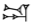
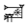
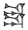
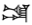
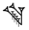

Documentation home » Editing in ATF » Quick reference
ATF Quick Reference
A quick reference sheet for the ATF format.
Structure Conventions
See the Structure Tutorial for more details.
| & | Text/catalogue number designator |
| @<type> | @composite (for composite texts) |
| @<object> | Object = @tablet, @envelope, @prism, @object <object-type> |
| @<surface> | Surface = @obverse, @reverse, @surface, @edge, @left, @right, @top, @bottom, @face [a..z] |
| @seal <n> | for transliteration of seal impressions on objects; n=number |
| @column | column |
| <number>. | line of text |
| <number>.<subcases>. | line of text with subdivision into cases |
| $ <qualification> <extent> <scope> <state> | non-text, such as breakage, blank lines, etc. qualification = at least, at most, about number = NUMBER, RANGE, n, several, some, start of, beginning of, middle of, end of, rest of scope = OBJECT, SURFACE, case(s), column(s), line(s), surface state = blank, broken, damaged, effaced, illegible, missing, traces |
| $ <multiple> ruling | horizontal ruling(s) in the text multiple = single, double, triple |
| $ (image N = <text>) | location of inline image, such as a seal impression or a diagram |
| # | comment line |
| =: | multiplexing comment line giving original order of interpreted/reordered signs in preceding line of transliteration. |
| <whitespace> | continues previous line (modern convenience, not ancient line break) |
Inline ASCII Conventions
See the ATF Inline Tutorial for more details.
| [A-ZṢŠṬ][a-zṣšṭ][₀-₉] | grapheme name |
| <hyphen> | joiner for graphemes of single word |
| <space> | word separator |
| ! | flags correction of sign |
| ? | flags uncertainty of identification or reading |
| * | flags collation |
| # | flags damage to sign |
| [...] | encloses material broken away from object |
| [(...)] | encloses material perhaps broken away from object |
| value(SIGN) | explanatory name or variant form after value |
| value!(SIGN) | actual signs on object given after corrected version |
| <...> | accidental omission supplied by editor |
| <(...)> | intentional omission supplied by editor |
| MIN<(...)> | surrogate text supplied by editor |
| <<...>> | material removed by editor |
| {...} | determinative delimiters (written in normal script) |
| {{...}} | gloss delimiters |
| ~ | following sign is a logogram |
| x | unclear sign |
| X | clear sign not yet identified |
| |...| | compound grapheme delimiters |
| [.x%&+()] | compound grapheme operators (see QR.3 below) |
| [āēīū], [âêîû] | long vowels in normalized Akkadian |
| %[sahrux] | language shift |
| %e,%u,%g,%n | register/writing system shift |
| _..._ | encloses material in alternate language |
Compound Grapheme Conventions
See the ATF Inline Tutorial for full documentation of these conventions.
| . | juxtaposed signs, e.g., DU.DU  |
| × | following sign(s) written over/within preceding
sign, e.g., GA₂×AN  |
| & | signs are written one above the other, e.g.,
DU&DU  as opposed to standard DU |
| + | signs are ligatured, e.g.,
|LAGAB+LAGAB|(nigin₂)  |
| (...) | grouping of signs, e.g., GA₂×(ME.EN)  |
| @g | gunu, e.g., DU@g  as opposed to
standard DU |
| @t | tenu, e.g., GAN₂@t  |
| @v | variant, e.g., 4(ban₂)@v  |
Steve Tinney & Eleanor Robson
Steve Tinney & Eleanor Robson, 'ATF Quick Reference', Oracc Documentation, Oracc, 2013 [http://oracc.museum.upenn.edu/doc/editinginatf/quickreference/]